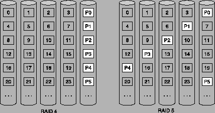

Next: P+Q Redundancy (RAID 6)
Up: RAID
Previous: Block-Interleaved Parity (RAID 4)
Contents
Index
ผลของการจัดการของ RAID 4 อันมีประสิทธิภาพทำให้สามารถนำมาใช้งานได้สำหรับการอ่านและเขียนข้อมูลขนาดใหญ่รวมถึงการอ่านและเขียนข้อมูลขนาดเล็ก แต่ความยุ่งยากของ RAID 4 คือต้องมีการอ่านข้อมูลเก่าก่อนทุกครั้งที่จะทำการเขียนข้อมูลทำให้เกิดความล่าช้าในการบันทึก
เพื่อแก้ปัญหาความล้าช้าในการบันทึกข้อมูลของ RAID 4 ข้อมูลของพาริตี้จึงได้มีการปรับให้มีการบันทึกลงไปในหน่วยเก็บข้อมูลทุกตัวแทนที่จะมีการบันทึกลงในหน่วยเก็บข้อมูลเพียงตัวเดียวและได้เกิดเป็น RAID 5 ขึ้น
ในรูปที่ 8.2 แสดงการกระจายข้อมูลสำหรับ RAID 4 เปรียบเทียบกับ RAID 5 ซึ่งจากที่เห็นจะพบว่าข้อมุลพาริตี้ใน RAID 5 มีการกระจายข้อมูลของพาริตี้ไแตามหน่วยเก้บข้อมูลตัวอื่นๆ แทนที่จะเก็บเอาไว้ที่เดียวเช่นใน RAID 4
Figure 8.2:
แสดงการกระจายข้อมูลสำหรับ RAID 4 เปรียบเทียบกับ RAID 5
|

|
Vara Varavithya
2005-08-18